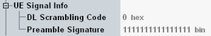

The "UE Signal Info" parameters describe properties of the measured uplink signal that the R&S CMW needs for synchronization and decoding. The parameters are common measurement settings, i.e. a parameter has the same value in all WCDMA measurements for which it is relevant.
While the combined signal path scenario is active, these parameters are controlled by the signaling application.

Index i for calculation of the downlink primary scrambling code number by multiplication with 16.
In the standalone (SA) scenario, this parameter is controlled by the measurement. In the combined signal path (CSP) scenario, it is controlled by the signaling application.
Preamble signature displays which of the 16 signatures defined by 3GPP TS 25.213 are available and associated with the PRACH. From left to right, the bit sequence defines the availability of signature 15 to signature 0 (0=not available, 1=available).
This parameter is available in the combined signal path (CSP) scenario only. It is controlled by the signaling application.
Remote command: